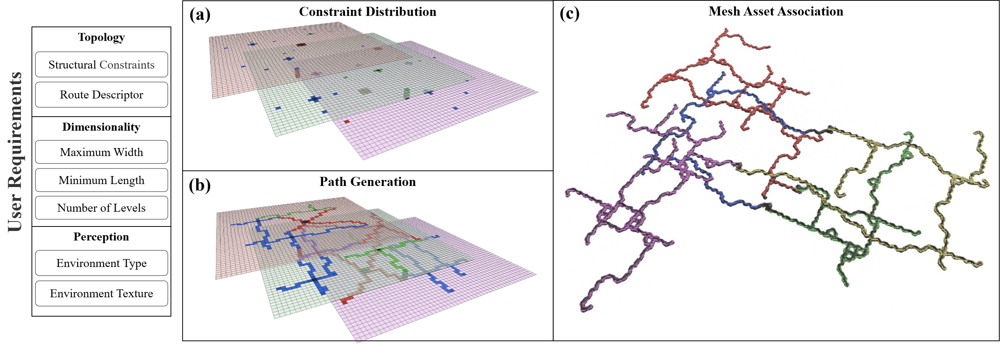
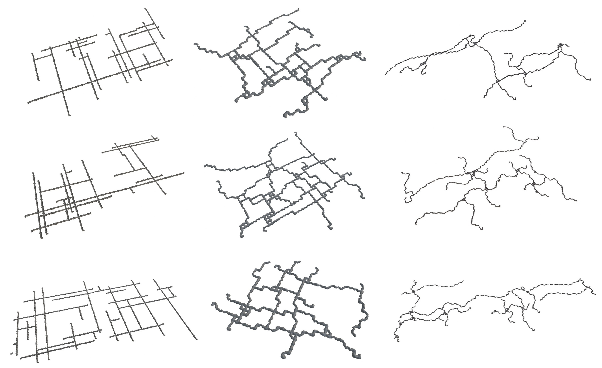

Abstract
Subterranean (SubT) environments have been a frontier for autonomous robotics, driven by the push for automation of mining operations and the interest in planetary exploration (Martian Lava Tubes). Due to the challenges involved in accessing real SubT environments, rigorous hardening of autonomy stacks in realistic simulation environments is critical. This article fills a well-known gap, which relates to the unavailability of a large-scale simulation-based benchmarking infrastructure for rigorous statistical evaluation of robotic autonomy, due to which it is common for SubT research articles to present validation results in a few environments at best. This article presents SubTGraph, a novel framework for rapid synthesis of multi-level SubT environments with high variability, incorporating user specifications related to topology, dimensionality, textures, etc., to generate distinct environments such as operational mines, natural caves and lava tubes. SubTGraph builds a cost matrix from user-specified structural constraints to guide the classical Dijkstra algorithm to procedurally generate SubT worlds utilizing topometric tiles from the DARPA World Generator. The SubTGraph world creation codebase is open-sourced along with a database consisting of 75 highly variable underground worlds.
Overview
SubTGraph is a subterranean world generator for statistical evaluation of robotic techniques. This tool is governed by the user-specified configuration that allows the creation of object meshes with different levels, topologies, textures, widths and lengths.
Download the software from Zenodo

Benchmark dataset
The benchmark includes 75 worlds from operational, natural and lava tube environments.
Download the benchmark dataset from Zenodo

Citation
If you use SubTGraph in your work, consider including the citation of this publication.
@misc{caso2026subtgraphlargescalesubterraneanenvironment,
title={SubTGraph: Large-Scale Subterranean Environment Synthesis with Controllable Topological Variability for Robotic Autonomy Validation},
author={F. Labra Caso and A. Saradagi and S. Fredriksson and S. Nordström and A. Koval and G. Nikolakopoulos},
year={2026},
eprint={2605.20917},
archivePrefix={arXiv},
primaryClass={cs.RO},
url={https://arxiv.org/abs/2605.20917},
}